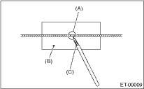

ENTERTAINMENT > Antenna
1. Clean the antenna wire and surrounding area with a cloth dampened by alcohol.
2. Paste a thin masking film on the glass along broken wire.
3. Apply the conductive silver composition (DUPONT No. 4817 or equivalent) on the broken portion with a drawing pen.

|
(A) |
Broken portion |
|
(B) |
Masking film |
|
(C) |
Conductive silver composition |
4. Dry out the deposited portion.
5. After repair has been completed, measure the resistance in repaired wire.